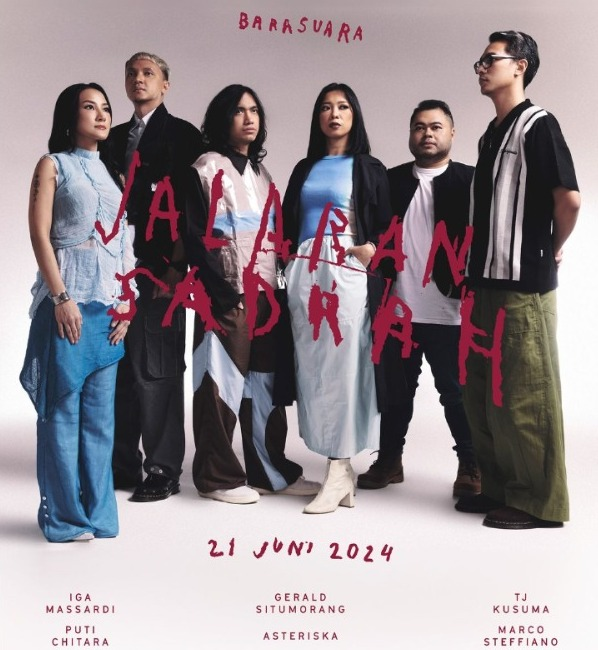

Taifun (2015)
Album perdana yang memperkenalkan karakter musik Barasuara yang eksplosif, penuh dengan harmoni vokal bersahutan dan lirik puitis.
Eksplorasi sonik dari seluruh ruang rekam Barasuara.
Album perdana yang memperkenalkan karakter musik Barasuara yang eksplosif, penuh dengan harmoni vokal bersahutan dan lirik puitis.

Eksperimen sonik dengan aransemen instrumen berlapis yang jauh lebih kompleks serta membawa tema kedewasaan dan dinamika kehidupan.

Karya monumental pasrah yang memadukan kemegahan aransemen orkestra Erwin Gutawa serta kolaborasi folk magis bersama Sujiwo Tejo.